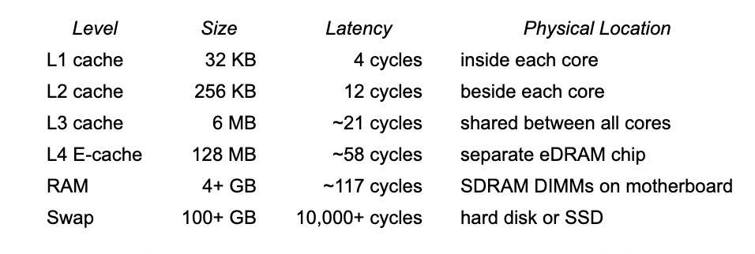

并发编程和多核编程概要
并发编程和多核编程概要¶
内存屏障¶
内存屏障是一个大型的话题。下面我们浓缩一些要点。
内存屏障要达到的目的，是保证在 SMP 架构中，CPU 核心 A 对内存的写入动作是可被控制的有序的，而且写入的数据能够反映到其它核心的高速缓存中（如果有必要的话）。
内存屏障的根本性机理，就在于对总线加锁。
这当然是物理电路上实现的，但也是通过诸如 lfense/sfence/mfense 机器指令来触发的（对于 x86 来说）。通过总线锁定，CPU 多个核心的写入动作能够依据例如 sfense 的宣告来顺次提交到内存地址 M 上，并且能够通过总线解锁的信号来通知到 CPU 的每个核心能够将相应的高速缓存条目无效化，无效化的后果就是当核心 N 执行下一指令访问 M 的数据时，新鲜的数据版本能够被重新载入到核心 N 的高速缓存，这就解决了过时的脏数据问题，保证了数据的一致性。
内存模型和内存顺序¶
略
数据一致性¶
Gcc¶
在 Linux 中，gcc 提供编译器屏障 barrier() 和 ACESS_ONCE()，此外还有CPU内存屏障：
- 通用屏障，保证读写操作有序，包括mb()和smp_mb();
- 写操作屏障，仅保证写操作有序，包括wmb()和smp_wmb();
- 读操作屏障，仅保证读操作有序，包括rmb()和smp_rmb();
此外，使用 gcc 内建的原子操作 ，包括 对 int32，int64 的 cmpxchg 等特性，也都对数据一致性提供了相应的支持。注意 C++11 可以使用标准的 atomic库 来达到同样的效果。
Golang 中的数据一致性¶
在 Golang 中，内存屏障、内存顺序等技术点是被隐含在 Go 语言编码约定中的。这些约定大体上体现在 包初始化顺序，Goroutine创建、销毁、以及共享变量在主线程以及 Goroutines 之间的同步，Channel通讯，锁（sync包）等方面[^4]。
注意到除了隐含约定之外，你的确可以使用 sync 包提供的锁来达到同步目的。此外，Go 也提供标准的 atomic 包来支持原子操作（诸如 int32, uint64 等）
全面讨论 多核、并发编程，已经是一整本书的问题，因此这里只能择其概要进行简述。总而言之，我们现在就要综合上述的各种知识点来具体实现一个无锁的环形队列，这个队列是有界的，你可以选择在抵达边界时的行为是锁定还是覆盖。下面我们具体来研究细节。
false sharing¶
假共享 false sharing 是一种在 SMP 上特有的性能问题。
这个问题源于 SMP 系统中每个 CPU 核心均配有一个高速缓存（以下用 L1 指代它）。一个高速缓存通常包含了一组 Cache Line（也称作 Cache Block），当 CPU 核心访问内存数据时，它会从内存地址 Addr 处开始，连续读取多个字节到一个 Cache Line 中（我们知道多数 CPU 的 Cache Line 的大小都是 64 字节）。这样，当下一条指令在操作相关的内存时就无需通过总线去读取内存数据了，此时就表示一个 Cache Line 被命中了。
CPU 高速缓存以及内存的访问延迟：

可想而知，如果多颗 CPU 核心的 L1 们同时都有内存地址 Addr 处的数据块在它们各自的 Cache Lines 中的话，某个核心如果修改了该数据块，则其它核心的相应的 Cache Lines 都会被无效掉，然后那些核心的指令操作将会不得不重新通过总线访问内存数据。
这样的频繁的 L1 失效将会导致频繁的总线锁，进一步带来的是性能严重下降的后果。
在下图中，设计的不良的数据结构及其算法，线程 0 和线程 1 级时修改的是不同的变量，也会引发 Cache Line 失效，导致 false sharing 问题。
False sharing occurs when threads on different processors modify variables that reside on the same cache line. This invalidates the cache line and forces a memory update to maintain cache coherency. Threads 0 and 1 require variables that are adjacent in memory and reside on the same cache line. The cache line is loaded into the caches of CPU 0 and CPU 1 (gray arrows). Even though the threads modify different variables (red and blue arrows), the cache line is invalidated, forcing a memory update to maintain cache coherency.
来自于[^100]

借助 false sharing 特性强制令 L½ 失效以便从内存总线从新载入数据。
设计良好的数据结构、或者利用填充字节来避免 false sharing 特性引起的高速缓存失效问题，从而避免影响到系统性能。
同样地，避免高速缓存失效，也能避免微指令级别的锁定（通常意味着主板总线锁），防止取得过时的（脏的）数据。
因为绝大多数CPU都适用于64字节的 Cache Line，所以内存填充能够有效地避免数据被同时载入不同的CPU核心的高速缓存中。这里的意思是，假设一个结构体中的两个相邻的变量 V1 和 V2 被填充字节分开了，那么核心 A 在访问前一个变量 V1 时，将无法“顺便”地连同后一个变量 V2 一起加载到 A 的 Cache Line 中，因而其它核心在访问后一个变量 V2 时，就不会因为 V2 在核心 A 的 Cache Line 中而导致 false sharing。
在 Golang 中，可以这样得知 Cache Line 的大小：
const CacheLinePadSize = unsafe.Sizeof(cpu.CacheLinePad{})
也可以这样使用一个“整”的填充块：
type ringBuf struct {
_ cpu.CacheLinePad
cap uint32
_ cpu.CacheLinePad
capMod uint32
}
或者通过计算来填充：
type ringBuf struct {
cap uint32
_ [CacheLinePadSize-sizeof(uint32)]byte
}
Intel 为了解决这些缓存间的同步问题，在 cache 上实现了 MESIF 协议，来保证缓存的同步，即：在一处修改缓存后，其它缓存的状态会跟着改变。
一致性原语在支持并行的语言里都有支持，golang 也不例外。golang 官方已经提供给我们不少资料来描述这个问题，首先就是 github 上的 LearnConcurrency，里面详细介绍了一致性原语的设计、使用中的细节。其中最推荐看的是这篇 The Go Memory Model，不仅列举了不少一致性原语的正确打开方式，更是引入了Happens Before 这一重要概念。
Golang 一致性原语及内存模型¶
略
Go 和 乱序执行¶
atomic 包¶
所有 Store 内存的操作，实际上都带了 LOCK 前缀，也就是说都有 Happens Before 的语义。而 golang 在分配内存的时候，是实现了内存对齐的，所以单纯地 Load 内存的操作，也可以保证操作原子性，但不保证 Happens Before 的语义。这也刚好解释了为何在 The Go Memory Model 只字不提 atomic 和 Happens Before 的关系。